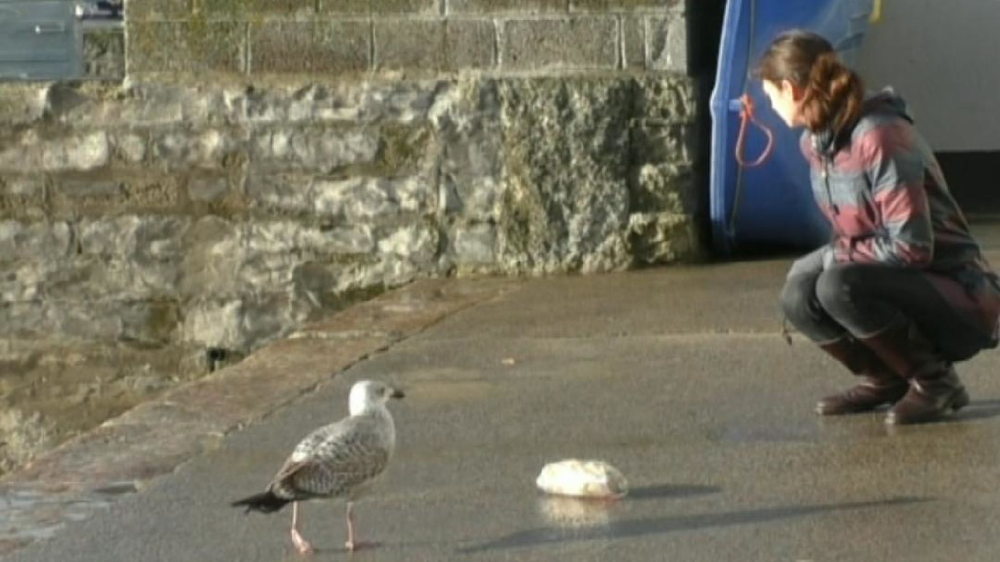
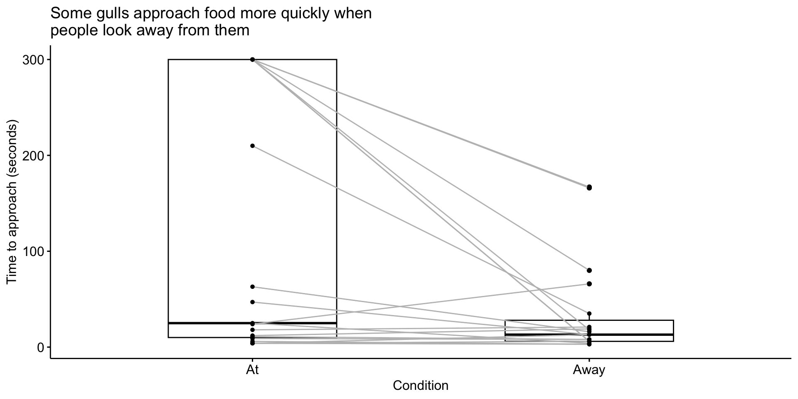
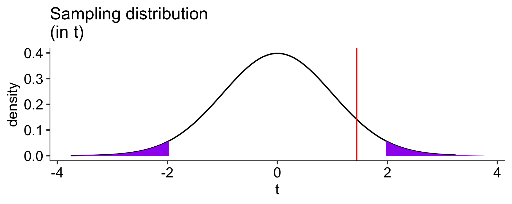

Paired-sample tests
Announcements
- Oral Exam questions posted next week
- Oral exam time slots open next week – please sign up before Monday Dec 2!
- Send requests for Tuesday’s lecture.
Previously…
- chi-square \((\chi^2) tests\)
- One-sample t-tests
Today
- Paired-samples t-tests
In longitudinal research, the same people provide responses to the same measure on two occasions (the individuals in the two groups are the same).
In paired-sample research, the individuals in the two groups are different, but they are related and their responses are assumed to be correlated. Examples would be responses by children and their parents, members of couples, twins, etc.
In paired-measures research, the same people provide responses to two different measures that assess closely related constructs. This resembles longitudinal research, but data collection occurs at one time.
All of these are instances of repeated measures designs.
The advantage of repeated measures designs is that, compared to an independent groups design of the same size, the repeated measures design is more powerful.
Two groups are more alike than in simple randomization
The correlated sampling units will have less variability on “nuisance variables” because those are either the same over time (longitudinal) or over measures (paired measures), or very similar over people (paired samples).
Nuisance variables – anything that isn’t relevant to the study.
Each of these repeated measures problems can be viewed as a transformation of the original two measures into a single measure: a difference score. This reduces the analysis to a one-sample t-test on the difference score, with null mean = 0.
If the repeated measures are \(X_1\) and \(X_2\), then their difference is \(D = X_1 – X_2\). This new measure has a mean and standard deviation, like any other single measure, making it appropriate for a one-sample t-test.
\[t_{df = N-1} = \frac{\bar{\Delta}-\mu}{\frac{\hat{\sigma}_\Delta}{\sqrt{N}}}\]
\[H_0: \bar{\Delta} = \mu\] \[H_1: \bar{\Delta} \neq \mu\]
\[H_0: \bar{\Delta} = 0\] \[H_1: \bar{\Delta} \neq 0\]
Example 1: Gulls
Human-wildlife conflict in urban areas endangers wildlife species. One species under threat is the Larus argentatus or herring gull, which is considered a nuisance owing to food-snatching and other behaviors. A recent study examined whether herring gull behavior is influenced by human behavior cues and whether this could be used to reduce human-gull conflict.
Example 1: Gulls
In this study, experimenters visited coastal towns in the UK and found locations with multiple gulls. They placed a bag of potato chips (250 g) in front of them and measured how long it took gulls to peck at the food.
“We adopted a repeated measures design… We randomly assigned individuals to receive Looking At or Looking Away first, and trial order was counterbalanced across individuals. Second trials commenced 180 s after the completion of the first trial to allow normal behaviour to resume.”
In the Looking At treatment, the experimenter directed her gaze towards the eye(s) of the gull and turned her head, if necessary, to follow its approach path until the gull completed the trial by pecking at the food bag.

In the Looking Away treatment, the experimenter turned her head and eyes approximately 60° (randomly left or right) away from the gull and maintained this position until she heard the gull peck at the food bag.
gulls = read.delim("https://raw.githubusercontent.com/uopsych/psy611/refs/heads/master/data/gulls/pairs.txt")
gulls GullID At Away
1 FAL01 210 35
2 FAL03 300 80
3 FAL04 6 3
4 PEN03 18 21
5 W120M 47 13
6 W019 25 4
7 PNZ01 4 13
8 PNZ02 9 8
9 STI01 300 18
10 STI02 300 6
11 W186 11 8
12 STI03 4 3
13 STI04 4 6
14 HEL02 12 19
15 NEW01 300 6
16 NEW02 63 16
17 NEW03 300 166
18 PER01 24 66
19 TRU01 300 167Hypothesis testing
Use a paired-samples t-test because we have the same gulls in both conditions.
\(\large H_0\): There is no difference in how long it takes gulls to approach food between conditions.
\(\large H_1\): Gulls take longer to approach food in one of the conditions.
Sampling distribution
t-distribution requires two parameters, a mean and a standard deviation.
The mean of our sampling distribution comes from our null hypothesis, so
\[\large \mu = 0\]
Sampling distribution
Our standard deviation of our sampling distribution is the standard error of difference scores. This is calculated via the following steps
- calculating difference scores \((X_{1i}-X_{2i} = D_i)\)
- calculating the standard deviation of the difference scores \((s_D = \hat{\sigma}_D)\), and
- dividing the standard deviation by the square root of the number of pairs in your study \((se_D = \frac{\hat{\sigma}_D}{\sqrt{N}})\).
[1] 175 220 3 -3 34 21 -9 1 282 294 3 1 -2 -7 294 47 134 -42 133To calculate the standard error of difference scores, we simply divide the standard deviation by the square root of the number of pairs or, if repeated measures, the number of subjects.
\[\frac{\hat{\sigma}_\Delta}{\sqrt{N}} = \frac{115.85}{\sqrt{19}} = 26.58\]
Code
df = nrow(gulls)-1
cv_t = qt(df = df, p = .975)
t_x = seq(-3.76, 3.76)
plot_t = data.frame(t_x) %>%
ggplot(aes(x=t_x)) +
stat_function(fun = function(x) dt(x, df), geom = "line") +
stat_function(fun = function(x) dt(x, df), geom = "area",
xlim = c(cv_t, 3.76), fill = "purple") +
stat_function(fun = function(x) dt(x, df), geom = "area",
xlim = c(-3.76, -1*cv_t), fill = "purple") +
labs(title = "Sampling distribution \n(in t)", y = "density", x = "t")+
theme_pubr(base_size = 20)
cv_x = cv_t*se_delta
x = t_x*se_delta
plot_x = data.frame(x) %>%
ggplot(aes(x=x)) +
stat_function(fun = function(x) dt(x = x/se_delta, df = df), geom = "line") +
stat_function(fun = function(x) dt(x/se_delta, df = df), geom = "area",
xlim = c(cv_x, max(x)), fill = "purple") +
stat_function(fun = function(x) dt(x/se_delta, df = df), geom = "area",
xlim = c(min(x), -1*cv_x), fill = "purple") +
labs(title = "Sampling distribution \n(in difference in seconds)", y = "density", x = "difference seconds")+
theme_pubr(base_size = 20)
ggarrange(plot_t, plot_x, ncol = 2)Test statistic
\[t_{df = N-1} = \frac{\bar{\Delta}-\mu}{\frac{\hat{\sigma}_\Delta}{\sqrt{N}}}\]
In this case, N refers to the number of pairs, not the total sample size.
\[t_{df = N-1} = \frac{83.11-0}{26.58} = 3.13\]
Note: A paired-samples t-test is exactly the same as a one-sample t-test on the difference scores.
Code
df = nrow(gulls)-1
cv_t = qt(df = df, p = .975)
t_x = seq(-3.76, 3.76)
statistic_t = m_delta/se_delta
plot_t = data.frame(t_x) %>%
ggplot(aes(x=t_x)) +
stat_function(fun = function(x) dt(x, df), geom = "line") +
stat_function(fun = function(x) dt(x, df), geom = "area",
xlim = c(cv_t, 3.76), fill = "purple") +
stat_function(fun = function(x) dt(x, df), geom = "area",
xlim = c(-3.76, -1*cv_t), fill = "purple") +
geom_vline(aes(xintercept = statistic_t), linetype = 2, color = "red")+
labs(title = "Sampling distribution \n(in t)", y = "density", x = "t")+
scale_x_continuous(limits = c(-3.8, 3.8))+
theme_pubr(base_size = 20)
cv_x = cv_t*se_delta
x = t_x*se_delta
statistic_x = statistic_t*se_delta
plot_x = data.frame(x) %>%
ggplot(aes(x=x)) +
stat_function(fun = function(x) dt(x = x/se_delta, df = df), geom = "line") +
stat_function(fun = function(x) dt(x/se_delta, df = df), geom = "area",
xlim = c(cv_x, max(x)), fill = "purple") +
stat_function(fun = function(x) dt(x/se_delta, df = df), geom = "area",
xlim = c(min(x), -1*cv_x), fill = "purple") +
geom_vline(aes(xintercept = statistic_x), linetype = 2, color = "red")+
labs(title = "Sampling distribution \n(in difference in seconds)", y = "density", x = "difference seconds")+
scale_x_continuous(limits = c(-3.8*se_delta, 3.8*se_delta))+
theme_pubr(base_size = 20)
ggarrange(plot_t, plot_x, ncol = 2)Another option is to calculate the area above the absolute value of the test statistic and multiply that by two – this estimates the probability of finding this test statistic or more extreme.
t-test functions
t-test functions
Paired samples t-test
Variables: Away , At
Descriptive statistics:
Away At difference
mean 34.632 117.737 -83.105
std dev. 50.897 135.166 115.849
Hypotheses:
null: population means equal for both measurements
alternative: different population means for each measurement
Test results:
t-statistic: -3.127
degrees of freedom: 18
p-value: 0.006
Other information:
two-sided 95% confidence interval: [-138.942, -27.268]
estimated effect size (Cohen's d): 0.717 Example 2: Larks and Owls
People differ in their optimal time of day to perform a task (morning people = larks, evening people = owls). One study tested whether mind-wandering was more likely at one time of day and as a function of chronotype. Participants completed an attention task twice: once in the morning and once in the evening.
For this example, we’ll be ignoring individual differences (weep) and focus only on the mind-wandering task variable.
Subject TimeOfDay MWCount
1 1 Evening 15
2 1 Morning 5
3 2 Morning 11
4 2 Evening 13
5 3 Evening 29
6 3 Morning 26
Paired samples t-test
Outcome variable: MWCount
Grouping variable: TimeOfDay
ID variable: Subject
Descriptive statistics:
Evening Morning difference
mean 19.692 21.431 -1.738
std dev. 8.827 9.545 8.486
Hypotheses:
null: population means equal for both measurements
alternative: different population means for each measurement
Test results:
t-statistic: -2.336
degrees of freedom: 129
p-value: 0.021
Other information:
two-sided 95% confidence interval: [-3.211, -0.266]
estimated effect size (Cohen's d): 0.205 Visualizing this test
What is important to convey in a visualization of these data?
- The most obvious piece of information are means. (This is a test of the difference of means).
- Why is this a bad plot?
Code
ggpubr::ggbarplot(data = lao,
x = "TimeOfDay",
y = "MWCount",
add = "mean",
fill = "TimeOfDay",
color = "TimeOfDay",
palette = "Paired",
xlab = "Time of Day",
ylab = "Frequency of Mind Wandering") +
rremove("legend") +
theme(
axis.title = element_text(size = 30),
axis.text = element_text(size = 30))
Viz: show the mean tested
Code
lao_wide = lao %>%
select(Subject, TimeOfDay, MWCount) %>%
pivot_wider(names_from = TimeOfDay, values_from = MWCount) %>%
mutate(diff = Evening-Morning)
se = sd(lao_wide$diff)/sqrt(nrow(lao_wide))
moe = se*qt(p = .975, df = nrow(lao_wide) - 1)
lower_ci = mean(lao_wide$diff) - moe
upper_ci = mean(lao_wide$diff) + moe
lao_wide %>%
ggplot(aes(x = diff)) +
geom_rect(aes(xmin = lower_ci,
xmax = upper_ci,
ymin = -Inf,
ymax = Inf),
fill = "#85D4C8") +
geom_histogram(fill = "grey70",
color = "black") +
geom_vline(
aes(xintercept = mean(diff)),
linetype = "dashed") +
labs(
x = "Difference in Mind Wandering",
y = "Count"
) +
theme_minimal()Viz: show the individual people

Code
library(ggdist)
library(gghalves)
#without this line of code, R will organize things alphabetically.
# but i think it makes more sense for morning to come first
lao$TimeOfDay = factor(lao$TimeOfDay, levels = c("Morning", "Evening"))
# Create plot
ggplot(lao, aes(x = TimeOfDay, y = MWCount)) +
# Add violin plots on opposite sides
stat_halfeye(
data = subset(lao, TimeOfDay == "Morning"),
adjust = 0.5,
width = 0.6,
justification = 1.5,
.width = 0,
fill = "#85D4C8",
alpha = 0.8,
side = "left"
) +
stat_halfeye(
data = subset(lao, TimeOfDay == "Evening"),
adjust = 0.5,
width = 0.6,
justification = -0.5,
.width = 0,
fill = "grey70",
alpha = 0.6
) +
# Add boxplots
geom_boxplot(
data = subset(lao, TimeOfDay == "Morning"),
aes(fill = TimeOfDay, color = TimeOfDay),
position = position_nudge(x = -.15),
width = 0.15,
outlier.shape = NA,
alpha = 0.5
) +
geom_boxplot(
data = subset(lao, TimeOfDay == "Evening"),
aes(fill = TimeOfDay, color = TimeOfDay),
position = position_nudge(x = .15),
width = 0.15,
outlier.shape = NA,
alpha = 0.5
) +
# Add points and lines
geom_point(aes(group = Subject, color = TimeOfDay),
size = 2,
position = position_jitter(width = 0.05, height = 0, seed = 123)) +
geom_line(aes(group = Subject),
position = position_jitter(width = 0.05, height = 0, seed = 123),
alpha = 0.2) +
# Customize theme
scale_fill_manual(values = c("#85D4C8", "grey70")) +
scale_color_manual(values = c("#85D4C8", "grey70")) +
theme_minimal() +
theme(
panel.grid.major.x = element_blank(),
panel.grid.minor.x = element_blank(),
axis.title.x = element_text(margin = margin(t = 10)),
axis.title.y = element_text(margin = margin(r = 10))
) +
labs(
x = "Time of Day",
y = "Frequency of Mind Wandering"
) +
guides(
fill = "none",
color = "none"
)Visualizing paired-samples t-test
There’s a choice between displaying the statistics being tested (the mean and standard error of the difference scores) and displaying the data in its original units (two points per subject, means of individual conditions). You can’t have both. Pick the one that best conveys the information you want a reader to walk away with.
Better yet, put one in your manuscript and the other in supplemental material!
Also, making good data visualizations can take some work. But it’s really worth it. This is where AI can be a great friend!
The variance of difference scores
With the raw data, the calculation of the variance of the standard deviation scores \(\large (\hat{\sigma}_\Delta)\) is intuitive. Sometimes you will not have access to the raw data, but will want to conduct the test.
For example, you read a study that compares a sample of Oregon students to known US benchmarks on several variables using multiple one-sample t-tests; you want to know whether OR students respond more to one variable than the other.
Code
school = read_csv(here("data/census_at_school.csv"))
school = school %>% filter(ClassGrade >= 9) %>%
filter(!is.na(Importance_reducing_pollution)) %>%
filter(!is.na(Importance_recycling_rubbish))
psych::describe(school[,c("Importance_reducing_pollution", "Importance_recycling_rubbish")], fast = T) %>%
select(n, mean, sd) %>%
kable(., col.names = c("N", "Mean", "SD"),
digits = 2) %>%
kable_styling()| N | Mean | SD | |
|---|---|---|---|
| Importance_reducing_pollution | 194 | 792.15 | 937.03 |
| Importance_recycling_rubbish | 194 | 714.85 | 652.65 |
Code
The correlation between these variables is 0.61.
It turns out that the mean difference score is the same as the difference in means, so that’s an easy part of the calculation.
But the calculation of the standard deviation becomes a little more complicated:
\[\large \hat{\sigma}_\Delta = \sqrt{\hat{\sigma}^2_{X_1} + \hat{\sigma}^2_{X_2} - 2r(\hat{\sigma}_{X_1}\hat{\sigma}_{X_2})}\]
Now you have all the information you need for the statistical test!
\[\large \hat{\sigma}_\Delta = \sqrt{\hat{\sigma}^2_{X_1} + \hat{\sigma}^2_{X_2} - 2r(\hat{\sigma}_{X_1}\hat{\sigma}_{X_2})}\]
What happens if \(\large r\) is large and positive?
What happens if \(\large r\) is small and positive?
What happens if \(\large r\) is negative?
Assumptions
- Independence (between pairs)
- Normality
Note: These are the same assumptions as a one-sample t-test.
Next time…
Dealer’s choice!